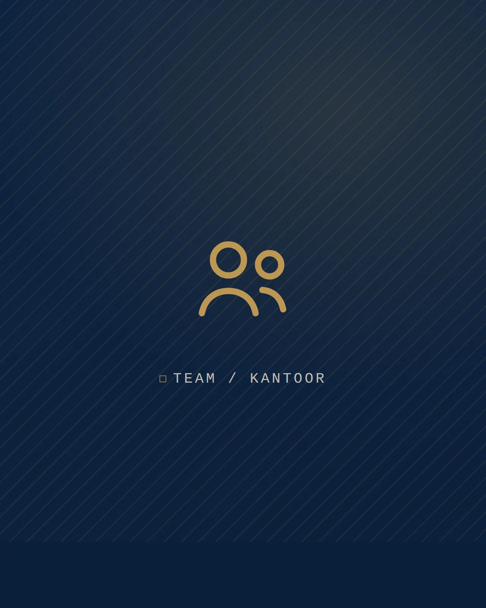

Het is maandagochtend in het aangifteseizoen. De stapel is hoog en een klant wacht op een overzicht van zijn kosten van vorig jaar. Even de bankmutaties in ChatGPT plakken met de vraag ze in te delen, en binnen een minuut staat er een keurige tabel. Weer een taak afgevinkt. Maar stonden er namen, rekeningnummers en salarissen in die mutaties? Dan staan die gegevens nu mogelijk op een server waar uw kantoor geen zicht meer op heeft.
AI voor accountants is er dus al. Op veel kantoren alleen buiten het zicht van de leiding. In dit artikel leest u waar het risico zit en hoe u AI veilig een plek geeft.
Shadow AI op het accountantskantoor: goed bedoeld, toch riskant
Meer dan de helft van de Nederlandse werknemers gebruikt AI op het werk.1 Grote kans dat dat ook op uw accountants- of administratiekantoor gebeurt. Wanneer medewerkers dit op eigen initiatief doen, buiten de afspraken en het zicht van het kantoor, heet dat shadow AI. Denk aan ChatGPT, maar ook aan gratis transcriptie-apps, vertaaltools of de AI-assistent in de browser. Soms zit AI ingebouwd in software, zonder dat medewerkers het merken. Deze hulpmiddelen helpen sneller te werken, maar zijn lang niet altijd veilig.
Gratis AI-tools mogen ingevoerde gegevens vaak gebruiken om hun modellen te trainen. Hun servers staan meestal buiten de EU. Plakt een medewerker een loonadministratie, een kolom bankgegevens of een conceptjaarrekening in zo'n tool? Dan weet u niet meer waar die gegevens heen gaan. Dat past niet bij de AVG, en niet bij de vertrouwelijkheid die uw klanten van u verwachten. Bovendien kan er zo een datalek ontstaan dat u moet melden bij de Autoriteit Persoonsgegevens.
Gebruikt u het zelf of doet een medewerker het: als kantoor bent u verantwoordelijk.
AI in de accountancy veilig inzetten: niet verbieden, maar faciliteren
Uw medewerkers willen AI gebruiken omdat het helpt. Een verbod werkt dan meestal niet: het gebruik gaat gewoon door, alleen nog verder uit het zicht. Regel daarom een veilige omgeving.
Kijk wat er al gebruikt wordt
Vraag uw team welke AI-tools ze gebruiken, of laat het meten. Dan weet u waar u staat.
Zo helpt Legal IT: Met de beheerde FortiGate-firewall van Fortinet zien we welke AI-diensten er vanaf uw kantoor worden gebruikt. Ook uw beheerde laptops lopen via die firewall, dus we zien het ook als iemand thuis of onderweg werkt.
Bied een veilig alternatief: Microsoft 365 Copilot
Kies een zakelijke AI-tool die werkt binnen uw eigen beveiligde omgeving. Microsoft 365 Copilot zit in Outlook, Word, Excel en Teams, de programma's die uw kantoor al gebruikt. Copilot werkt met de mails en documenten waar een medewerker zelf al bij kan. Uw gegevens blijven van u en worden niet gebruikt om het model te trainen.
Zo helpt Legal IT: Wij richten Copilot voor u in. Eerst ruimen we de toegangsrechten op, want Copilot ziet alles waar een gebruiker bij kan. Staat een map met salarisgegevens voor iedereen open, dan vindt Copilot die ook. Gevoelige stukken krijgen een label, zodat ze buiten de chat blijven.
Maak duidelijke afspraken
Bepaal welke tools wel en niet mogen, en welke gegevens er nooit in gaan. Sinds februari 2025 vraagt de Europese AI-verordening ook dat medewerkers voldoende kennis van AI hebben.
Zo helpt Legal IT: We helpen u met een kort AI-beleid en een praktische training voor uw team. En we blokkeren niet-toegestane tools met de webfilter van de firewall. Op kantoor, maar ook thuis en onderweg: uw beheerde laptops gaan altijd via de firewall.
Wat een AI-assistent wel en niet doet in de boekhouding
Met Copilot vat u een lange mailwisseling met een klant samen in een paar regels, met een conceptantwoord eronder. U laat Excel opvallende verschillen in een overzicht aanwijzen. Een overleg in Teams wordt uitgewerkt tot besluiten en actiepunten. En Word zet een eerste versie klaar van een begeleidende brief bij de jaarrekening.
Bij “ai boekhouding” denken veel mensen aan het automatisch verwerken van facturen en bonnen. Die functies zitten steeds vaker in de boekhoudpakketten zelf, en daarover gaat uw softwareleverancier. Eén ding geldt overal: AI maakt fouten. De verantwoordelijkheid voor wat er naar een klant gaat, blijft bij uw kantoor. Lees dus altijd na wat AI heeft gemaakt.
Tijd besparen en klantgegevens beschermen
Een week later, weer maandagochtend. Het verslag van het klantgesprek van vrijdag staat al klaar: het gesprek is uitgewerkt binnen uw eigen Microsoft 365-omgeving. Het kostenoverzicht maakt de medewerker met Copilot in Excel, en de bankgegevens zijn nergens anders heen gegaan. U weet welke AI-tools uw team gebruikt, iedereen kent de afspraken en onveilige tools zijn geblokkeerd. Afgevinkt, en dit keer zonder zorgen over klantgegevens.
Veilig werken met AI is pas het begin. Er kan nog meer van de lijst af.
Terugkerend werk? Wij automatiseren het voor u
De volgende taak: de ontbrekende stukken voor de jaarrekening bij vijf klanten opvragen. Precies het soort werk waarvoor iemand snel een chatbot opent. Maar het kan ook veilig en vanzelf. Met Microsoft Power Automate en koppelingen tussen systemen:
- Stukken opvragen: ontbrekende documenten worden automatisch opgevraagd, met een vriendelijke herinnering als ze uitblijven.
- Nieuwe klant, nieuw dossier: na de intake staat de dossiermap klaar in SharePoint, met de juiste rechten.
- Mail op de juiste plek: berichten en bijlagen worden bij het dossier opgeslagen, niet in iemands mailbox.
- In- en uitdienst: een nieuwe medewerker heeft op dag één een werkend account. Vertrekt iemand, dan is de toegang direct dicht.
Alles wat we bouwen, leggen we vast en beheren we. De gegevens verlaten uw eigen omgeving niet.
Bronnen
- PwC Nederland (29 september 2026). Hopes and Fears 2026. pwc.nl
Wilt u uw team de voordelen van AI geven, zonder de risico's?
Legal IT regelt de inrichting en het beheer van uw Microsoft 365-omgeving en denkt mee over veilige AI op uw kantoor. Laat ons weten bij welk werk u tijd wilt winnen, dan kijken we samen wat er kan en wat er eerst geregeld moet worden.
Plan een gesprek →